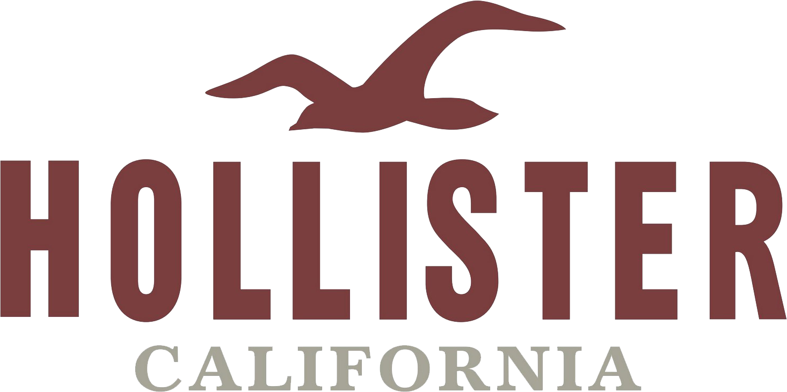

Education
BEng Electronic Engineering with Placement Year
University of Surrey
- Predicted 2:1
- September 2013 - July 2017
- Guildford, UK
- Placement Year at J.P. Morgan Chase
- Modules studied:
- Electronics (Analogue & Digital)
- Mathematics
- Programming (C)
- Engineering Science
- Communications and Networks
- Labs, Design & Professional Studies
- Final Year Modules
- Object Oriented Programming (C++)
- Computer Vision and Pattern Recognition
- Data & Internet Networking
- Digital Signal Processing
- Year 3 Project/Dissertation
- Professional Studies
- University of the Year, The Times & Sunday Times Good University Guide 2016
- 2nd for Electronic Engineering - Guardian University Guide 2016
- 4th - Guardian University Guide 2017 (After Cambridge, Oxford & St Andrews)
- Top 1% of all higher education institutions in the world, QS World University Rankings 2015/2016
- 5 Star International Rating by QS
Sixth Form & Secondary School
Chew Valley School & Sixth Form
- September 2006 - July 2013
- Bristol, UK
A Levels
- A - Mathematics
- B - Further Mathematics
- B - Physics
AS Levels
- A - Mathematics
- A - Further Mathematics
- A - Physics
- C - Chemistry
- D - Music
GCSE's
2 A*, 4 A’s, 4 B’s
- A* - Mathematics
- A* - Biology
- A - Chemistry
- A - Physics
- A - Religious Studies
- A - Music
- B - English
- B - English Lit
- B - French
- B - History
- Distinction - ICT
Work Experience
-
Deutsche Bank

- Regulatory Risk & Compliance, Integrated Controls Framework Developer and Business Analyst
- Summer Technology Internship
- June 2016 - August 2016
- London, UK
- Part of small team working with the Deutsche Bank project sponsors, a project manager consultant, ServiceNow technical consultant and a business analyst.
- The project was building a flexible tool to display Deutsche Banks compliance with technology regulations and risks in a near time dashboard for senior management, managers and regulators. All data inputted via an intranet portal and ServiceNow tickets. The data is mapped to control measures, which is mapped to the bank's policies, which is mapped to regulatory authorities' regulations, all via the ServiceNow GRC (Governance, Risk and Compliance) module. This can show if the overall bank is complying, any compliance gaps and further detail into specific teams, applications and impacts.
- My role was to help setup the data universe and then create the first version of the dashboard using SQL and SAP Business Objects Design Studio so that the dashboard could be published to the internal report repository. The version of the dashboard I created was used to present the vision of the project to gain future funding from more senior management.
- At the end of my internship the dashboard was handed over to an internal SAP Business Objects expert who said my work was a solid foundation and professional quality.
- Also did some business analyst work creating some use cases, requirements and test data for the demo dashboard.
- Helped organise a workshop for people involved with the project. I presented a section on the process for updating a control measure.
- Really valuable experience learning about technology risks and control measures to minimise the risks.
- Group internship project of a presentation to senior technology management.
- Took part in a corporate social responsibility day, building new paths at Tower Hamlets park.
-
J.P. Morgan Chase
- Global ETL(Informatica) & Messaging Support
- Year Long Technology Internship
- June 2015 - June 2016
- Bournemouth, UK
- Part of an 8 person global infrastructure middleware engineering team, supporting Informatica PowerCenter ETL and a fax imaging solution.
- Responibilities:
- Resolve support tickets raised by our internal clients within the required timeframe.
- Look into issues and outages (including production), working with our team and other teams to resolve the issue as quickly as possible and perform root cause analysis afterwards.
- Execute code deployments using the command line.
- Monitor the teams infrastructure on Geneos and, when needed, save space to prevent outages.
- Plan maintenance, notify user of planned work and future outages.
- Weekend European support for issues and planned maintenance.
- Chair the teams two daily scrum calls.
- For serious issues we would liaise with Informatica vendor support.
- Worked on the team tech refresh, responsible for communications, discussing the project with clients and their requirements and acquiring the license.
- Created for the team a new intranet webpage (Bootstrap, HTML, CSS, Javascript, Sharepoint).
- Implement new Geneos key performance indicators on our systems to monitor usage on each server and provide trending analysis for ourselves and management.
- Updated our team’s inventory management system inputs.
- Helped with the team's compliance reporting documentation.
- Created infrastructure performance and issue reports on IBM Cognos scheduled to run weekly for the team meetings and for my manager to take to the management meetings. The reports were very successful and so our risk officer asked me to adapt the report so that she could use it for the whole Middleware department and when a member of our team left, she ask me if I could adapt it for her new team to use.
- Group internship project of a presentation to senior technology management.
- Built a network and made contacts enabling me to arrange my own shadowing in eTrading technology, FX product sales, P1 incident management, trading floor support and desktop support.
-
University of Surrey
- Student Life Mentor
- Semester time job
- Sept 2016 - present
- Guildford, UK
- Important role working for the University, ensuring that new students settle into university life. I am a friendly face that visits freshers hall of residence each week and discuss their university experience and any concerns or questions they have.
- For most people, going to university is the first time they have moved away from home, on top of that they are living with people they have never met before. This can be stressful and so having a fellow student that they can talk to who has experienced university life and isn’t university support or a lecturer, really helps.
- Important to identify if in flats or individuals there are more serious problems and then help to resolve the issue or report it to university staff to help the group/person through it.
- Responsible for about 80 students.
- Programme started with 4 days training with valuable seminars about listening to peoples problems, helping them cope and get through it.
-
Hollister
- Sales Associate
- Semester time job
- Nov 2014 - present
- Guildford, UK
- Recruited whilst at University.
- Work on the shop floor, greeting customers and delivering excellent customer service.
- Uphold the high standards and image of the brand with great attention to detail.
-
Waitrose
- Various Roles
- Holiday job
- July 2013 - January 2015
- Wells, UK
- Recruited and trained for a new branch in Wells, Somerset, in May 2013
- Original position was on the Welcome Desk (Customer Service/ Complaints) and checkouts.
- Interacted positively with customers and gave excellent customer service.
- Selected to be cross trained for other departments to be more flexible at work.
- Enjoyed working on the Welcome Desk solving customer problems in a quick, efficient and polite manner.
-
Castle Of Comfort Inn
- Various Roles
- Holiday job
- July 2013 - April 2015
- East Harptree, UK
- Worked in a diverse range of roles in a rural family run pub in a popular tourist area. Fulfilling duties such as, bartender, waiter, preparing food, cleaning and changing barrels.
- Often locked up the pub, was a key holder and covering managerial responsibilities when required.
- Worked well and efficiently in a small team prioritising jobs when the pub was busy.
-
Others
- Weston Power Distribution- Year 12 School Work Experience
- Cross Manufacturing- Year 10 School Work Experience
Programming Experience
Driven by sheer passion and interesting in technology, how it works and creating cool things!.
Languages
Click on panel for more details
Web Development
Skilled
C
Confident
Javascript
Confident
Unix
Confident
Swift (iOS)
Confident
SQL
Confident
C++
Comfortable
Java
Comfortable
Node.JS
Comfortable
PHP
Learning
Software Packages
Click on panel for more details
ETL (Informatica PowerCenter) Support
Skilled
Geneos Monitoring
Confident
IBM Cognos Reporting
Confident
SAP Business Objects (Design Studio, Universe Design Tool) Reporting
Confident
Amazon AWS & Heroku
Confident
Matlab
Comfortable
Open Source Projects
Moment-Timezones
Added country functionality
Awaiting Merge
Over 1.3 Million Downloads Per Month
Evidence
An important javascript library used by many for minipulating times in different time-zones.
I saw on the Issues tab of the Moment-Timezone users requesting the functionality to be able to use country name abbreviations instead of only the zone, I thought this is a cool project used by many people and a really useful piece of functionality that will add value to the library. I spoke to the community on the issue and decided to go for my first pull request! It was a great learning experience and I received great feedback. I am really proud of my contribution, adding a relatively large new feature to the library and I am looking forward to my next pull request!
Lessons leant from first pull request
- Give more clear names to commits.
- Before programming, have a clear plan of work to be done instead of just going through in random order.
- Clarify exact requirements and recommendations how to implement with community.
- The feedback has really helped my code quality.
Personal Projects
Tribe App
In development
The golden source of your private data and the new standard in personal data management.
An app focused on protecting and managing your private data, with ease and security.
Swift iOS app using an API to connect to Node.js backend hosted on Heroku using Postgres Database. OAuth API for clients.
Tribe is not a social network, there is no posting/sharing content.
Key Features
- Have only one golden source of data - Problem with the modern world is that every person has so much personal data online, in different places and duplicated, that there is no data quality! This adds complexity to your life remembering and managing everything, losing control of who is storing your data and what data and when you do need to change your data, a real headache going through everything. Tribe manages all your data keeping perfect data quality. When you update your personal data, all the sources downstream such as logins, subscriptions and your contacts will automatically be synchronised and now only be able to see and use your new details.
- Use Tribe to manage all your contacts, logins, subscriptions etc in one place - Use Tribe to manage anything that stores your personal data. Tribe is designed to lockdown and protect your personal data. Only share the data you want to share with only people you trust and select to see that data. For each contact and clients, set which field of your personal data they can see. Can also change specific settings for each client, such as how they can contact you and how often.
- Login using Tribe - Log into websites using Tribe. Can have a specific username and password for that particular account or just use your Tribe account. From within Tribe can reset password, turn on/off two factor authentication, get notified when you login, can freeze account, delete account and see last login date.
- No spamming or stalking - To find and add new user's contacts must be given your Tribe ID or a One-Use ID. If an account searches for 5 invalid ID’s in a row, the search feature is locked for increasing periods of time.
- Download data feature - Feature to download ALL the data Tribe knows about you.
Future Features
- Personal document store (such as NI number, Passport etc) verified by trusted agencies (such as banks/post offices/universities) and choose when to share documents and to whom.
- Price comparison. If you opt in, Tribe can use your personal data to check the best deals for insurance, mobile phone contracts etc for you, compare it with your current contract and tell you when to change and help you change with minimum clicks (as it already has all the data needed).
- Apply for jobs with one click.
- Accept and store warranties, contracts, receipts and official letters.
- And much, much more…
Tribe is bringing the personal data revolution.
Willing to show code/unlock private repository on request.
HireAlexGrace.com
This Website!
A digital CV website created for myself with a dynamic and clear user experience showcasing my experience, education and skills to potential employers. Also includes links to social media platforms and the option to download my CV's.
Technical details:
- Build from Bootstrap 3
- Yeoman Webapp Framework/Scaffolding
- Hosted on GoDaddy
- HTML, CSS, Javascript, PHP
- Performance optimised
- Google Analytics & Hotjar
- Google PageSpeed Insights score:
University Coursework Projects
Language: C
Four pieces of coursework spread across two semesters whilst learning C programming.
Coursework:
- Calculating the difference between any two days in the history and/or future. (Year 1, Semester 2)
- Library book database in sorted tree structure (Year 1, Semester 2)
- Game of Reversi, Human vs Humam & Human vs Computer (Year 1, Semester 2)
- Quadtree Encoding of a Binary Image (Year 2 Semester 2, I achieved 94%, code available on GibHub with a written report explaining the coursework and also feedback from the lecturer)
I especially enjoyed the programming module. I really liked learning C and programming priciples and I enjoyed doing the coursework, achieving very high marks for each piece.
Other projects
Undertaken a range of smaller projects out of interest and wanting to learn new skills and languages.
I often wonder "How is this done?" and so I look it up online using tutorials, stackoverflow and blogs and learn how to do it.
Examples
- Learnt to build a Bootstrap 3 website with PHP and SQL login form. Hosted on an micro Amazon EC2 server, learning setting up a cloud server, installing LAMP (Linux, Apache, MySQL, PHP) stack, setting up the DNS routing using Amazon Route 53 and then FTPing my website to the host. Website is now taken down as it was just a bit of fun and a learning experience.
- Taught myself Object Orientated Programming by practing a ranging of examples in C++ and then moved onto doing similar exercises in Java
Hackathons & Challenges
Hacker Rank
Contests taken part in
- Week of Code 22 - 08/08/2016, 7 day contest with new challenge to do each day, Java & Javascript & C++, Top 25% (2725 outof 12356 participants)(4 out of 7 challenges taken part in)
- Morgan Stanley Codeathon 2016 - 06/08/2016, 24 hour contest, Javascript, Top 50% (1806 outof 3936 participants)(2 out of 6 challenges taken part in)
- Booking.com Back End CodeSprint - 06/08/2016, 6 hour contest, Javascript, Top 33% (991 outof 3042 participants)(2 out of 6 challenges taken part in)
- Other fun practices on their website
* Some contests incomplete due to fitting in competing around work and family commitments
I enjoyed taking part in the online contests and taking into account some of the programmers on the platform are very experienced and used to the Hacker Rank style question (some very mathematic), I believe I did very well for a self-taught junior developer.
Deutsche Bank Hackathon, London
Attended hackathon but did not take part due to internship starting too late to register.
A hackathon focused around Deutsche Bank's new EAAS (Everything As A Service) platform. Teams were given node.js containers, databases and internal site hosting to create a feature/service/page to improve employee productivity and morale. Teams of 4-6 people had 6 hours to create their product before demoing. I attended the hackathon at various points during the day around my work and it was really exciting to see the range of interesting products being created.
J.P. Morgan Chase Global Hackathon, Bournemouth
A global hackathon during my year long internship. It was an open-spec hackathon where teams had free-reign to create any product that would improve the bank. The product had to be hosted on J.P. Morgans cloud platform. The hackathon lasted 7 hours before the final demoing and local, regional and global winners. It was a really exciting and fast pace day where I learnt a lot.
Training, Courses, Seminars & Meetups
As well as reading a magnitude of online tutorials and blogs to feed my technoloy & developer, interest, curiousity, knowledge and skills, these are a few of the training, courses, senimars and meetups I have attended or completed.
Training and Courses
- Unix Training - internal training whilst working at J.P. Morgan Chase
- iOS 9 and Swift 2 - From Beginner to Paid Professional by Mark Price on Udemy
- SQL Database Masterclass - Go From Puplil To Master! by Rico Rodriguez on Udemy
- C - 2 semester with coursework and exams at university
- Java Programming Tutorials - Full series by "thenewboston" on YouTube
- Javascript, PHP, HTML & CSS, Make an Interactive Website (with Bootstrap) - Codecademy
- I may have forgotten some other courses!
Seminars & Meetups
- Twitter Fabric at Twitter - London
- How to Make an App from Beginning to End - London, non-programming, about taking the app to the appstore and useful tools and advice for along the process
- Technology Meetup at AirBnB - London
- App Devs Meetup at Google Campus - London
- I may have forgotten some meetups!
Achievements, Awards and Abilities
- Was appointed Second Year Joint Course Representative for Electronic Engineering, University of Surrey.
- It is an important role representing the cohort in meetings with senior departmental representatives using communication skills.
- It was a very rewarding experience and I achieved the prestigious award after two years of hard work and determination.
- For the award I undertook: Volunteering as a helper at my local Youth Club (volunteering), swimming for my local Swimming Club (activity), playing trumpet to Grade 7 (skill), a 2 week residential music summer camp in France (residential), and two 4 day wild hikes (expedition).
- I was invited to St James Palace in June 2014 to receive my award from Prince Edward, Earl of Wessex.
- Member of the University of Surrey Swimming squad and raced at the British Universities and Colleges Sports Championships in Sheffield twice.
- Before University I trained with my local swimming club for over 10 years.
- Achieved grade 7 Trumpet and grade 5 music theory.
- Before University I rehearsed and performed every Saturday with the County Senior Brass Band and Symphonic Wind Band which competed in national competitions. I was also part of the school Orchestra and school Jazz band.
- Achieved Grade 5 Singing.
- Sung in two school choirs & competed in BBC School’s Choir of the Year competition.
- Joined the Toastmasters groups at both J.P. Morgan Chase in Bournemouth and Deutsche Bank in London.
- Enjoyed practicing my public speaking and spontaneous speaking on a regular basis and improved my speech delivery.
- Only intern to be recommended by their manager to attend associates bootcamp training event.
- Great day run by J.P. Morgan Chase management full of advice how to reach associate level, perform at a higher level, time management strategies and communication and team building exercises.
- Took part in a teamwork course at University, October 2014.
- It was an interesting day learning, developing and putting into practice teamwork skills.
- At school, took part in the Toyota Technology Challenge to create a miniature solar powered car. Had to design and build the car at school and then at the event compete in a drag race with points awarded for speed and style and also give a presentation on how it works and our car design.
- I was the team captain and the team reached the regional finals.
- During sixth form, on a weekly basis I taught my neighbours tech skills they wanted to improve.
- Each week would be different skills that they wanted to learn or questions they had. Typical examples were getting photo’s from their iPhone to Mac and then editing and sorting the photos in iPhoto and then putting the photos onto a digital photoframe or iPad.
- At school, I formed a team of able students and support teachers around me who were interested in starting the magazine.
- We commenced publishing a magazine each term incorporating school activities and other interesting articles.
- I was the first editor of the magazine and passed on my responsibilities after two years.
- At age 11, I started up a village paper-round with two of my friends. We made a deal with a local news agents and dropped flyers around the village.
- Each Sunday at 7am we would each drop about 20 papers to our customers and built a strong reputation for great customer service and reliable deliveries, even in the snow.
- When moving to University we passed the paper-round onto other youngsters in the village.
- F1 Fan; I like the skill, technical, strategy and competitive aspects.
- Enjoy travelling and have been to many places. I find it exciting seeing new places and experiencing different cultures.
- Interested in global financial markets.
- Held a National Pool Lifeguard Qualification and have undertaken various first aid qualifications.
- Conversational French.
- Clean Full UK Driving Licence since July 2012.
- Member of the University of Surrey Electronic and Amateur Radio Society (EARS).
Key Skills
I have a strong desire to learn and am inquisitive by nature. I grasp and learn new concepts quickly and tackle problems head on using initiative and clear, logical thought patterns as well as strong analytical skills and show good judgement. The programming languages I taught myself from tutorials and forums was because I wanted to learn more about the language, its uses and to fill the gap in my knowledge. During my internships I have had to learn lots of new skills and information very quickly and I am always eager to learn more. I listen well, absorb the information, ask any questions I have and then put the information into practice. Whilst working at J.P. Morgan Chase I wanted to further my knowledge I was learning at work and practice it, I practiced my Unix skills by using an Amazon EC2 micro instance playing around on it, installing the LAMP (Linux, Apache, MySQL, PHP) and then developed my own website for it, just for fun!
I am a strong and articulate communicator, I attended Toastmasters to further improve my communication and presentation skills and have given multiple presentations to senior management during my work experience. I keep my managers well informed of my work in a timely manner and I communicate well with colleagues to enable better performance. I am a strong communicator able to articulate complex ideas in a simple, clear way, I can think on my own and have a point of view, knowing when to press ideas and points but also know when it is time to just work and get the job done. I am also a strong listener, being able to understand other peoples views and take on feedback and advice to improve my performance and abilities. I give priority to my studies, but also participate in extra-curricular activities. I have friends from different activities and nationalities and enjoy University social life.
I am hard working, persevering until the task is completed to a high standard with great attention to detail. Forward planning enables me to achieve desired outcomes reliably and on time. At work I am very organised and make sure I complete all my work by the required deadline. During the summer holidays, many weeks I worked over 80 hours between two jobs, and also participated in family and social events.
I like to be challenged and I persist until I achieve the goal. I have a calm, confident manner, am resilient under pressure and have a positive can-do energy contributing to a positive culture. Examples of this are achieving my Duke of Edinburgh Gold Award, achieving grade 7 Trumpet, grade 5 Singing and Swimming. These required many years of dedication and drive to be successful.
I have experience working in many teams, and have enjoy working within both large and small teams, adding value and being a collaborative team player. I am a strong team member who contributes and provides a positive impact. I enjoy solving problems and have had to overcome challenging problems at work, in labs at Uni and on Duke of Edinburgh tasks with good outcomes.
From a young age starting a village paper round with my friends to starting the school magazine to developing this website and identifying a gap in the market and starting to develop my own app, I have demonstrated my entrepreneurial enthusiasm. I use my entrepreneurial mindset whilst at work and tackling problems, I am always thinking about what I am doing and could there be a better way to do this.